Simple Proportional Representation
BY Kelly Kiki
Published August 17, 2018
The possible necessity for Greece to abandon its reinforced proportional represantation system and to legislate "simple proportionality" for seats that elected parties capture in the parliament has been a hot and debatable topic for years. Here is what simple proportional representation system would mean for the Greek political scenery.
An electoral system for coalitions
The current government legislated simple proportional representation system in 2016, introducing the following calculation: the valid votes each party received are multiplied with total seats in the parliament and that is divided by the total valid votes for parties represented in the parliament. The majority of the Greek Parliament Members voted for that law, which didn't receive the necessary 200 out of 300 votes, so that it can be applied to the next national elections in 2019. The law will be in effect in the future, if the next Parliament does not withdraw it.
Let's use historical election results to see how "simple proportionality" could make things different.
Actual vs "What If"
How many seats election winners captured over the years and how many seats they would have captured, if "simple proportionality" was in use
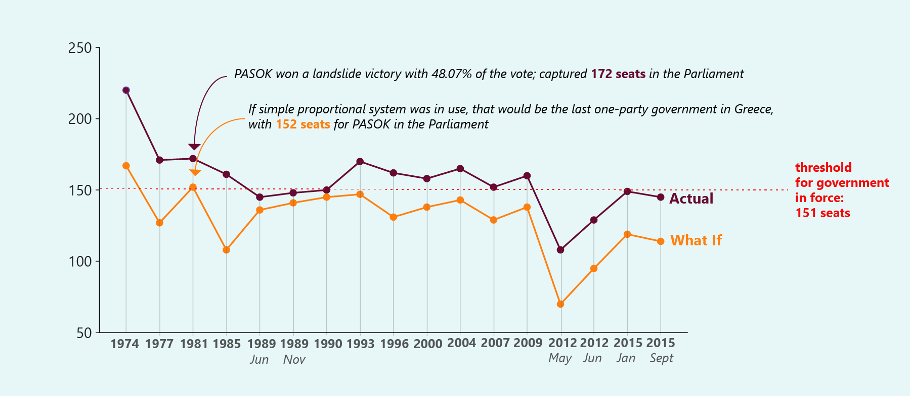NOTE: Current government's approach on "simple proportionality" is used to calculate the what-if number of seats captured by the winner after each election round.
SOURCE: Greek Parliament
11 scenarios for Alexis Tsipras back in September 2015
Syriza, the major party in the current coalition government, used to underline the necessity for Greece to switch to simple proportional representation system. Although that thesis was part of Syriza's major political communication agenda while being on the side of opposition, they didn't regulate any kind of "simple proportionality" in January 2015, when they were firstly elected as the government force. More than one year passed until the moment they introduced their law proposal. In between, Greece had voted again in September 2015, when SYRIZA was the election winner once again and captured 145 seats in the Parliament. Since 151 seats is the threshold for a government to be in force, SYRIZA collaborated with ANEL taking benefit of their 10 captured seats in the Parliament and they formed the current coalition government.
But how the Greek Parliament would look back in September 2015, if simple proportional representation system was in use? And what kind of coalition government Greece could have? Here are the 11 possible coalition scenarios for the current Prime Minister and the leader of SYRIZA, Alexis Tsipras.
The current Greek Parliament
SYRIZA captured 145 seats after the last national elections in September 2015; they collaborated with ANEL to form a 155-seats coalition government
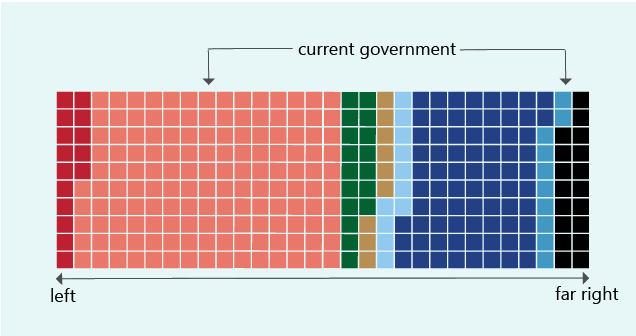SOURCE: Greek Parliament
How the current parliament would look under simple proportional representation
Seats difference between SYRIZA and the grand opposition party, New Democracy, would decrease from 70 to 24 seats
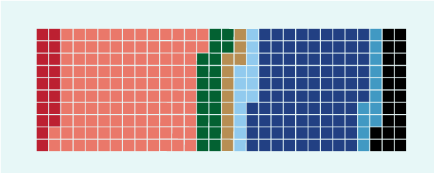NOTE: Current government's approach on "simple proportionality" is used to calculate the what-if number of seats captured by party.
Additional or lost seats for each party, if "simple proportionality" was in use
SYRIZA would lose 31 seats that would be shared proportionally among the rest of the parties
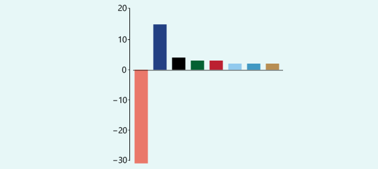NOTE: Current government's approach on "simple proportionality" is used to calculate the possible seats difference.
Scenario 1
Tsipras decides that's the moment for a historical collaboration with the grand opposition party, New Democracy
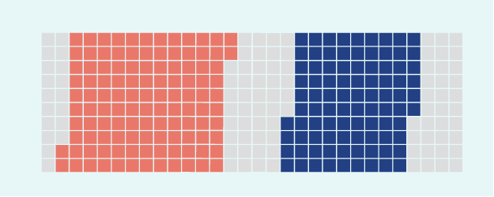Scenario 2
SYRIZA collaborates with the "neo-Nazi" Golden Dawn and PASOK, which had been in government for years and led the country to the bailout program in 2010
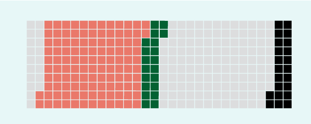Scenario 3
SYRIZA collaborates with Golden Dawn and the Communist Party of Greece
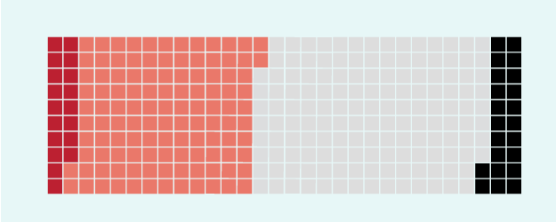Scenario 4
SYRIZA collaborates with Golden Dawn, its current ally in the government, ANEL, and Greek new "Potami" party
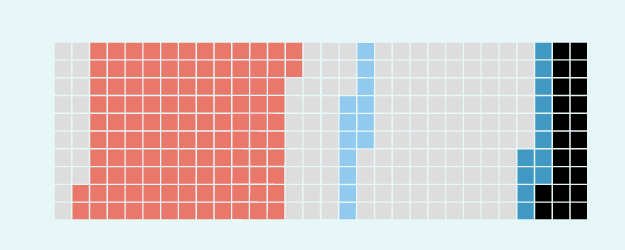Scenario 5
SYRIZA collaborates with PASOK and the Communist Party of Greece
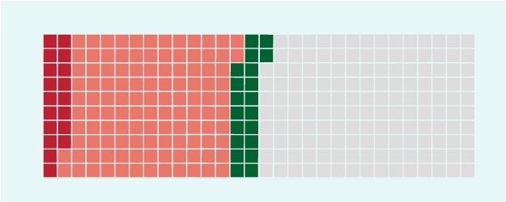Scenario 6
SYRIZA collaborates with PASOK, the "Potami" and their current partner, ANEL
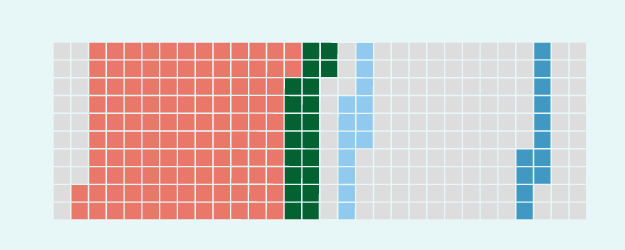Scenario 7
SYRIZA collaborates with PASOK, the "Potami" party and the Union of Centrists, which finally succeeds the necessary votes threshold (3%) to be represented in the Parliament
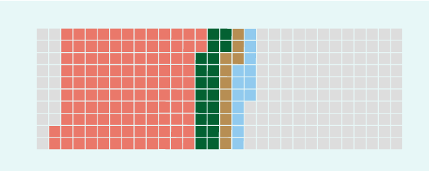Scenario 8
SYRIZA collaborates with PASOK, ANEL and the Union of Centrists
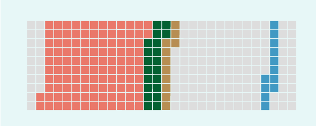Scenario 9
SYRIZA collaborates with the Communist Party, the "Potami" party and ANEL
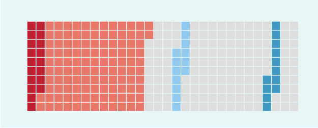Scenario 10
SYRIZA collaborates with the Communist Party, the "Potami" party and the Union of Centrists
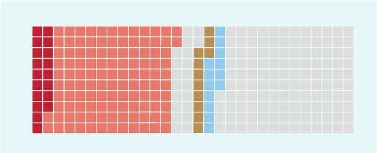Scenario 11
SYRIZA collaborates with the Communist Party, ANEL and the Union of Centrists
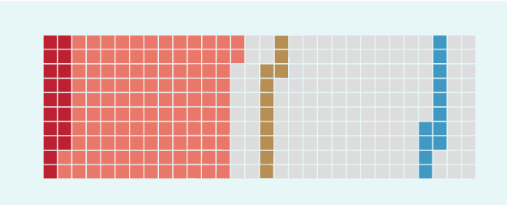You probably know, these 11 scenarios are based on numerical calculations, but the majority of them are not considered as politically realistic. Here comes the open question, though: Does it mean that the recently legislated simple proportional representation system is a stupidity in terms of political realism or it could bring changes that the political system didn't dare until now?
Are you interested to know more about Greek politics? Have a look at another story about change in Greek voting over time.